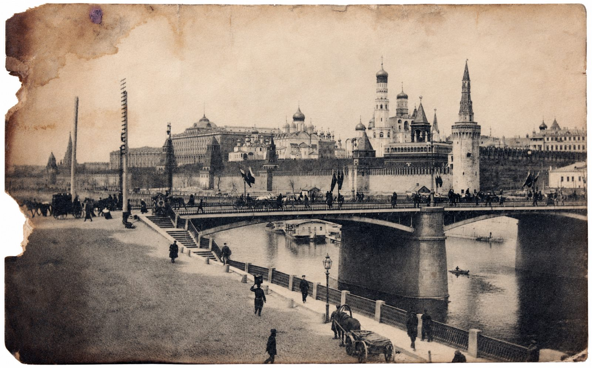
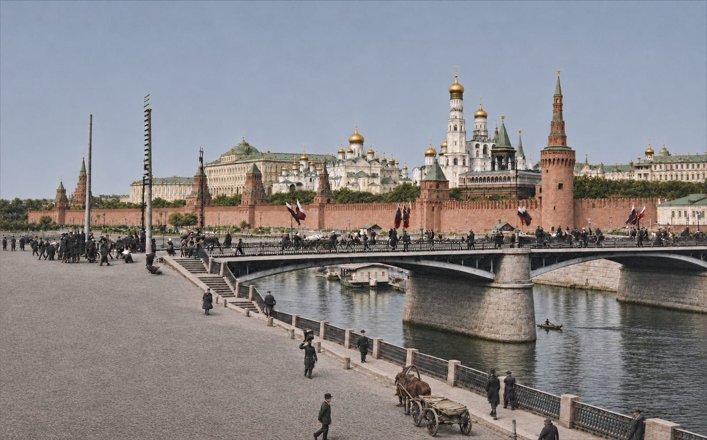

Archivo Neuromórfico quiere usar «Puente frente al Kremlin»
01
Llega una solicitud
La IA te dice qué recuerdo quiere usar y para qué. Nada pasa sin que lo sepas.


En la Moscú de 2050 una IA reconstruye la historia con lo que la gente sube. Memoria propia es la pausa que falta: antes de tocar un recuerdo, la IA te pregunta, te muestra qué cambiaría y tú decides.
Tres pasos. Ninguno es automático. Sigue deslizando →

Archivo Neuromórfico quiere usar «Puente frente al Kremlin»La IA te dice qué recuerdo quiere usar y para qué. Nada pasa sin que lo sepas.

Tu original junto a la versión IA, con cada cambio marcado.
Conservas el original, aceptas los cambios con marca de IA o no lo reconstruyes.
Elige cuánto puede intervenir la IA y arrastra la línea para comparar.



Nada se toma por defecto.
Si no respondes, no se usa.
Asistencia humana
Alguien de carne y hueso lo revisa contigo antes de que la IA lo use. Sin su firma y la tuya, nada avanza.
Desactivada · decides solo
Lo que cambió la IA
Esperando tu decisión
Por qué
En Moscú 2050 una IA reconstruye el pasado y solo quienes tienen acceso la alimentan. Nos preguntamos cómo el diseño gráfico puede devolverles a las personas el control sobre cómo se cuenta su propia historia.
Respuesta a la pregunta
de Jarrett Fuller
La IA sabe qué pasó, pero no qué significa para quien lo vivió.
En el centro hay una persona real, con nombre y firma.
Una pausa a propósito: ver, entender y decidir.
La IA calcula el pasado. El diseñador defiende a quien lo vivió.
Volver al inicio